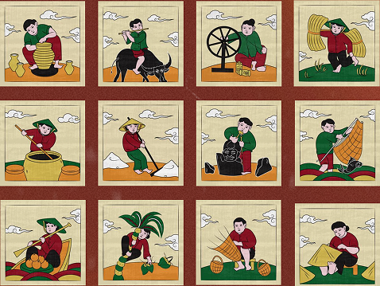
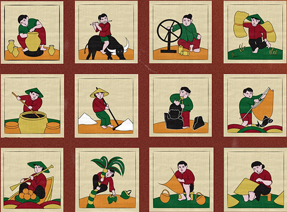
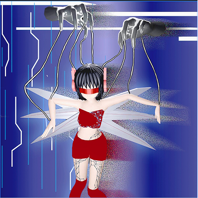
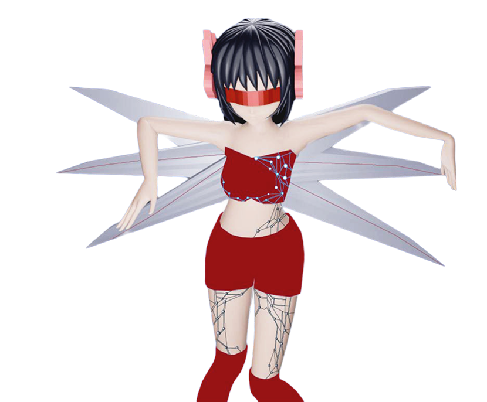

Inspired by Dong Ho folk art, this 12-icon set celebrates Vietnamese labor culture across three regions. Blending a nostalgic color palette with minimalist design, the project honors the dignity of local crafts while making heritage accessible to modern audiences.
I believe a website should be felt, not just read. This project invites users on an immersive interactive journey: as they scroll deeper, the interface transitions from chaotic noise to serene silence.
Inspired by The Kraken as a symbol of hidden identity, I leveraged visual effects and layout techniques to create a 'digital meditation' space. This work highlights my ability to guide user emotion through atmospheric design and purposeful interaction.

This project explores the fragile boundary between technological aid and machine takeover. Drawing inspiration from Cyberpunk aesthetics, I visualize a reality where AI is no longer a tool, but the ruler. Through the imagery of humans bound by the invisible strings of algorithms, this work poses a critical question: Are we utilizing AI, or are we slowly being replaced by it?
